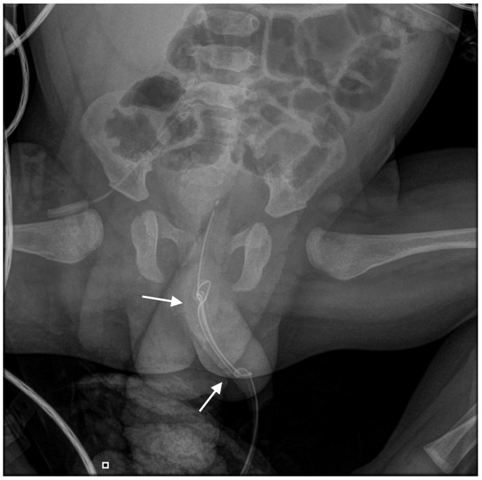
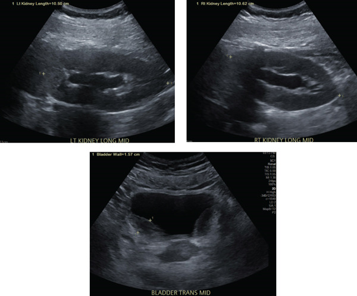
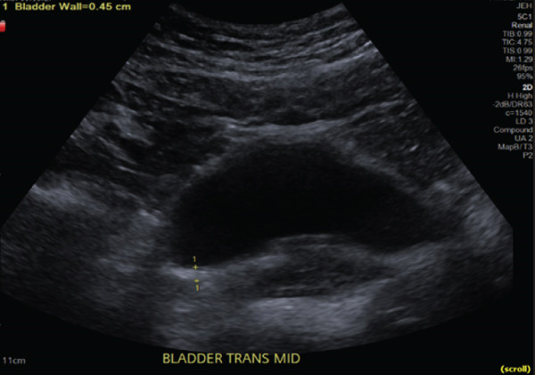

1739 — Cai sonde tiểu ở trẻ & thử cai sonde (TWOC) / Urinary catheter removal and trial without catheter in children
Tags: pattern:bi-tieu pattern:thanh-bang-quang-day pattern:u-nuoc-than vung:bang-quang vung:tieu-khung protocol:SA-tieu-khung protocol:MCUG protocol:cai-sonde
Mức chắc chắn (certainty): tổng hợp y văn (literature synthesis) — số liệu từ ba đoàn hệ nhi khoa có can thiệp quy trình rút sonde (PICU PMC6708639; chỉnh hình nhi PMC9497829 và PMC13460471), một loạt 12 trẻ tổn thương niệu đạo do sonde (PMC11762777), một ca kết nút sonde ở nhũ nhi (PMC13214670) và dữ liệu người lớn về thời gian lưu sonde (PMC2631699; PMC13138540). Ngưỡng thể tích bàng quang/tồn dư là thực hành nhi khoa (công thức Koff), không phải từ thử nghiệm ngẫu nhiên.
Bài này là mặt "quyết định rút sonde" — chẩn đoán CAUTI (cấy, ngưỡng, kháng sinh) đã có ở 3086. Câu chốt: mỗi ngày giữ sonde là một ngày tăng nguy cơ, và rút sớm không làm tăng bí tiểu nếu có quy trình. Ba con số: (1) nguy cơ nhiễm ~5%/ngày (PMC2631699), OR 1,07 mỗi ngày lưu (người lớn, PMC13138540); (2) rút sonde ngày hậu phẫu 1 giảm đặt lại ở khoa từ 19,1% xuống 2,2% và thời gian lưu 3 → 1 ngày, không tăng UTI (PMC13460471); (3) quy trình điều dưỡng rút sonde giảm 28% ngày sonde, CAUTI PICU 4,8 → 0,8/1.000 ngày sonde (PMC6708639).
1. Tổng quan bệnh học – cơ chế hình ảnh (TẠI SAO)
1.1 Vì sao "rút sonde" là điều trị, không phải thủ thuật phụ
- Trong 24–48 giờ, vi khuẩn bám mặt ngoài và lòng sonde, tạo màng sinh học (biofilm) bằng polysaccharide. Biofilm che vi khuẩn khỏi kháng sinh và bạch cầu → còn sonde thì ổ nhiễm còn; kháng sinh đơn thuần thường chỉ "dập" triệu chứng rồi tái phát.
- Nguy cơ tích lũy theo thời gian: trung bình 5%/ngày với sonde lưu ngắn (PMC2631699); ở đoàn hệ người lớn, mỗi ngày lưu thêm OR 1,07 và sonde latex OR 3,8 so với silicone (PMC13138540). Ở trẻ, số ngày có sonde là biến số can thiệp được — không phải "số phận".
- Vì sao trẻ khác người lớn: niệu đạo ngắn, hẹp; sơ sinh/nhũ nhi thường dùng sonde nuôi ăn 5–6 Fr vì không có Foley cỡ nhỏ → ống dài, mềm, dễ cuộn và kết nút (ước 0,2/100.000 lần đặt sonde, PMC13214670). Sang chấn niệu đạo do đặt sonde ở bé trai 13,4/1.000 lần (PMC11762777) — đây là cái giá của việc đặt lại sonde không cần thiết.
1.2 Sinh lý bàng quang trẻ: ngưỡng để quyết định "đủ nước tiểu chưa"
- Thể tích bàng quang mong đợi = (tuổi + 2) × 30 mL (công thức Koff; dùng trong bài 1744). Trẻ 4 tuổi ≈ 180 mL.
- Nước tiểu tồn dư (post-void residual, PVR) sau khi đi tiểu: ≤ 20 mL hoặc ≤ 10% thể tích mong đợi là chấp nhận được trong thực hành; > 20 mL cần đo lại sau khi bàng quang đầy đủ, và > 10% thể tích gợi ý bàng quang không tống xuất hết (cầu bàng quang yếu hoặc tắc đường ra).
- Vì sao phải chờ 6–8 giờ sau rút: bàng quang chỉ có cảm giác buồn tiểu khi đạt ~50% thể tích; đo PVR ngay sau rút khi bàng quang rỗng sẽ bỏ sót bí tiểu.
- Cơ chế bí tiểu sau rút sonde: (1) cầu bàng quang giảm co do giãn quá mức/giảm trương lực; (2) thuốc — opioid, thuốc gây mê, kháng cholinergic, epidural; (3) tắc đường ra — van niệu đạo sau, hẹp niệu đạo, sỏi, phù nề sau can thiệp; (4) nhiễm trùng niệu gây co thắt; (5) yếu tố tâm lý/lo âu ở trẻ lớn.
1.3 TẠI SAO hình ảnh học có vai trò trong quyết định rút
- Siêu âm thận – bàng quang trước và sau rút trả lời 3 câu: (1) có ứ nước thận không? (2) thành bàng quang dày bao nhiêu? (3) PVR còn bao nhiêu?
- Thành bàng quang bình thường khi căng ≤ 3 mm; > 3–5 mm là dày. Ca minh hoạ (viêm bàng quang tăng bạch cầu ái toan, không phải CAUTI) có thành sau 15,7 mm kèm ứ nước nhẹ hai bên, giảm còn 4,5 mm sau điều trị (PMC13449030) — cho thấy cùng mặt cắt, cùng độ căng mới so sánh được.
- Ứ nước thận độ 1–2 thường do trào ngược/tắc tạm; độ 3–4 (nhu mô mỏng, đài thận dạng gậy) là tắc nghẽn thực sự — phải giải áp trước khi bàn chuyện rút sonde.
- MCUG không thường quy: chỉ khi UTI sốt tái phát, nghi trào ngược độ cao, hoặc bất thường giải phẫu (PMC10252788).
2. Mẫu hình + chẩn đoán phân biệt theo vị trí (gamut)
- Trẻ không tiểu được sau rút sonde → 6 nhóm, theo cơ chế:
- Cầu bàng quang giảm co (detrusor underactivity) — sonde lưu lâu, bàng quang giãn, opioid/epidural; siêu âm: bàng quang căng, thành mỏng, không ứ nước thận.
- Tắc đường ra (outlet obstruction) — van niệu đạo sau, hẹp niệu đạo, sỏi, phù nề; siêu âm: ứ nước thận + thành bàng quang dày, có thể thấy niệu đạo giãn.
- Bàng quang thần kinh — tủy sống, thoát vị tủy, bất thường cùng; tiền sử thần kinh, PVR cao mạn, ứ nước.
- Nhiễm trùng niệu — tiểu buốt, nước tiểu đục; bí tiểu do co thắt; cấy dương.
- Sang chấn/biến chứng sonde — đau niệu đạo, chảy máu, cản trở khi rút, kết nút, đường hầm giả.
- Yếu tố tâm lý/thói quen — trẻ lớn, đau khi tiểu, sợ hãi; loại trừ bằng PVR và siêu âm bình thường.
3. Bảng so sánh phân biệt (ma trận đối chiếu)
| Thực thể (entity) | Hình ảnh / lâm sàng điển hình | Chốt vào (rule-in) | Chốt loại (rule-out) | Gợi ý xác nhận |
|---|---|---|---|---|
| Cầu bàng quang giảm co (do sonde/thuốc) | Bàng quang căng, thành mỏng, không ứ nước thận; sau rút sonde không buồn tiểu | PVR > 10% thể tích + không tắc + thuốc/epidural/opioid | Ứ nước thận + thành dày → nghĩ tắc, không phải cầu yếu đơn thuần | Siêu âm PVR; ngừng opioid/kháng cholinergic; CIC tạm |
| Tắc đường ra (PUV/hẹp niệu đạo/sỏi) | Ứ nước thận, thành bàng quang dày, bàng quang căng; dòng tiểu yếu | Ứ nước thận + PVR cao + dòng tiểu yếu | Siêu âm thận bình thường + dòng tiểu tốt → ít nghĩ tắc cao | Siêu âm + MCUG; soi niệu đạo khi nghi hẹp |
| Bàng quang thần kinh | Bàng quang hình tháp/cột, thành dày, ứ nước; tiền sử tủy | PVR cao mạn + bất thường thần kinh/tủy | Không có bệnh thần kinh, PVR về bình thường → ít nghĩ | Siêu âm + niệu động học (urodynamics) |
| Nhiễm trùng niệu | Thành bàng quang dày không đều, cặn trong lòng; cấy dương | Triệu chứng niệu + cấy qua sonde ≥ 50.000 CFU/mL (bài 3086) | Cấy âm + không triệu chứng → không phải nhiễm | Cấy nước tiểu đúng cách |
| Sang chấn / kết nút sonde | X-quang bụng: sonde cuộn/kết nút; đau, chảy máu khi rút | Cản trở khi rút + đau niệu đạo | Rút trơn, không đau → loại | Ngừng kéo, X-quang, hội chẩn niệu nhi |
4. Protocol chụp + hệ phân độ/điểm chuẩn hóa
4.1 Nguyên tắc: duyệt lại sonde mỗi ngày
- Chỉ định còn không? Nếu hết chỉ định (theo dõi huyết động ổn, hết bí tiểu, hết rửa bàng quang) → rút ngay, không chờ "đủ ngày".
- Không "luyện bàng quang" bằng kẹp sonde định kỳ: không có bằng chứng lợi ích, làm tăng nguy cơ nhiễm và bí tiểu; không khuyến cáo.
- Ghi nhận ngày đặt, ngày rút, lý do — đây là dữ liệu để audit.
4.2 Quy trình thử cai sonde (TWOC — trial without catheter)
- Chuẩn bị: cho trẻ uống đủ nước; ngừng opioid/kháng cholinergic nếu có thể; điều trị nhiễm trùng niệu đang hoạt động trước khi thử (nếu có).
- Rút sonde nhẹ nhàng, dừng ngay nếu gặp lực cản (nguy cơ kết nút/đường hầm giả).
- Theo dõi 6–8 giờ: trẻ phải tiểu tự nhiên; ghi thể tích, đau, có tiểu máu.
- Đo PVR bằng siêu âm sau lần tiểu đầu tiên khi bàng quang đã đầy: ≤ 20 mL hoặc ≤ 10% thể tích mong đợi → thành công.
- Nếu PVR cao hoặc không tiểu: đo lại sau 1–2 giờ; nếu vẫn cao → đặt lại sonde/CIC; không chờ quá 8–12 giờ ở trẻ có ứ nước thận hoặc đau nhiều.
4.3 Khi TWOC thất bại: chọn đường dẫn lưu
| Lựa chọn | Chỉ định | Ưu điểm | Nhược điểm |
|---|---|---|---|
| CIC (thông niệu đạo ngắt quãng sạch) | Bàng quang thần kinh, cầu yếu hồi phục | Ít nhiễm hơn sonde lưu, giữ sinh hoạt | Cần người chăm/thành thạo; sang chấn nếu kỹ thuật sai |
| Sonde niệu đạo lưu | Ngắn hạn, bí tiểu cấp chưa rõ nguyên nhân | Nhanh, sẵn có | Nhiễm 5%/ngày, sang chấn niệu đạo 13,4/1.000 (PMC11762777) |
| Sonde trên xương mu (suprapubic) | Niệu đạo không tiếp cận được (chấn thương, hẹp, PUV), cần dẫn lưu kéo dài | Tránh niệu đạo, dễ chăm sóc | Thủ thuật xâm lấn (nguy cơ tổn thương ruột/mạch), nhiễm, sỏi bàng quang |
4.4 Lưu đồ quyết định
flowchart TD
A[Trẻ có sonde tiểu] --> B{Còn chỉ định?}
B -->|Không| C[Rút sonde + TWOC]
B -->|Có| D[Duyệt lại mỗi ngày]
C --> E[Theo dõi tiểu 6–8 giờ]
E --> F{Tiểu được?}
F -->|Không| G[Đo PVR bằng siêu âm]
F -->|Có| G
G --> H{PVR ≤ 20 mL hoặc ≤ 10% thể tích?}
H -->|Có| I[Thành công — theo dõi ngoại trú]
H -->|Không| J{Có ứ nước thận / đau nhiều?}
J -->|Có| K[Đặt lại sonde ngay + siêu âm thận]
J -->|Không| L[Đo lại sau 1–2 giờ]
L --> M{Vẫn PVR cao?}
M -->|Có| N[CIC hoặc sonde trên mu — hội chẩn niệu nhi]
M -->|Không| I
4.5 Bằng chứng cho quy trình rút sớm
- Rút ngày hậu phẫu 1 ở trẻ mổ chỉnh hình có epidural: đặt lại ở khoa 2,2% vs 19,1% (p = 0,003), thời gian lưu 1 vs 3 ngày (p < 0,001), không khác UTI (PMC13460471). Trước đó, nhóm epidural đặt sonde 93% vs 17%, lưu 3 vs 1 ngày (PMC9497829) — "giữ đến hết epidural" là thói quen, không phải chỉ định.
- Giao quyền rút cho điều dưỡng theo chỉ định lâm sàng: giảm 28% ngày sonde, CAUTI PICU 4,8 → 0,8/1.000 ngày sonde (PMC6708639); có "bác sĩ phụ trách an toàn" giảm tỷ lệ sử dụng sonde 0,44 → 0,39 (PMC4684390).
- Sonde silicone thay latex và giảm số ngày lưu có thể giảm ~50% CAUTI xác nhận bằng cấy (dữ liệu người lớn, PMC13138540).
5. Biến thể bình thường và cạm bẫy
- Đo PVR quá sớm sau rút (bàng quang chưa đầy) → âm tính giả, cho rút rồi trẻ bí tiểu tại nhà. Cho uống nước, chờ 6–8 giờ.
- PVR cao thoáng qua do lo âu ở trẻ lớn: đo lại khi trẻ thoải mái; không đặt lại sonde ngay nếu trẻ vẫn tiểu được và không đau.
- Kẹp sonde "luyện bàng quang" không có bằng chứng; có thể gây trào ngược, nhiễm, đau.
- Rút sonde gặp lực cản = không kéo mạnh: có thể kết nút (nhũ nhi), bóng chưa xả hết, hoặc đường hầm giả; chụp X-quang bụng, gọi niệu nhi (ca PMC13214670 phải mổ bàng quang gỡ nút).
- Bơm bóng trước khi thấy nước tiểu → bóng trong niệu đạo → đau, chảy máu, hẹp về sau. Quy tắc: thấy nước tiểu rồi mới bơm.
- Sau giải áp tắc nghẽn: có thể đái nhiều sau tắc (post-obstructive diuresis) — theo dõi điện giải, không nhầm là "hồi phục hoàn toàn".
- Sốt sau rút sonde 24–48 giờ vẫn có thể là CAUTI (ổ đã hình thành trước rút) — cấy lại, đừng mặc định "đã rút là hết" (xem bài 3086).
6. Tự lượng giá — Blind Quiz
Ca 1 — Bé trai 6 tháng (hội chứng Crouzon) đặt sonde nuôi ăn 6 Fr sau mổ sọ. Ngày hậu phẫu 6, rút sonde gặp lực cản, bé đau và quấy.

- Gợi ý: sonde mềm cỡ nhỏ, lưu 6 ngày; không sốt.
- Hỏi: Thấy gì trên phim? Vì sao không được kéo mạnh? Xử trí tiếp theo?
Bấm để hiện đáp án
- Dấu hiệu: sonde tạo hai nút — nút đôi ở niệu đạo xa (mũi tên dưới) và một nút ở niệu đạo gần cổ bàng quang (mũi tên trên); ống cuộn trong bàng quang/niệu đạo.
- Chẩn đoán: kết nút sonde (catheter knotting) — biến chứng hiếm (~0,2/100.000 lần đặt sonde ở trẻ) nhưng điển hình ở nhũ nhi dùng sonde nuôi ăn dài/mềm.
- Vì sao không kéo: kéo mạnh làm rách niệu đạo, tạo đường hầm giả, hẹp niệu đạo về sau. Ca này phải mổ bàng quang gỡ nút.
- Xử trí: dừng kéo → X-quang bụng xác nhận → hội chẩn niệu nhi; nếu nút ở niệu đạo xa có thể thử gỡ qua nội soi, không thì mổ.
- Nguồn ảnh: Gkialas K et al., Reports 2026 (PMC13214670), Fig. 1 — CC BY 4.0.
Ca 2 — Bé gái 5 tuổi, tiểu buốt, tiểu máu, sốt nhẹ; sonde tiểu đã rút 3 ngày, tiểu ít.

- Hỏi: Mô tả bất thường trên 3 mặt cắt. Có nên rút sonde/đặt lại ngay không? Cần làm gì tiếp?
Bấm để hiện đáp án
- Dấu hiệu: hai thận có ứ nước nhẹ hai bên (đài thận giãn); thành sau bàng quang dày không đều tới 15,7 mm.
- Chẩn đoán trong ca gốc: viêm bàng quang tăng bạch cầu ái toan (eosinophilic cystitis) — không phải CAUTI; đây là ví dụ về thành bàng quang dày + ứ nước phải loại trừ tắc đường ra trước khi cho rút sonde.
- Bài học: thành bàng quang dày và ứ nước nhẹ không đặc hiệu; cấy nước tiểu đúng cách + siêu âm lặp lại sau điều trị.
- Nguồn ảnh: Hoyt L et al., Case Rep Urol 2026 (PMC13449030), Fig. 1 — CC BY 4.0.
Ca 3 — Cùng bệnh nhi sau 6 tuần điều trị, hết triệu chứng.

Bấm để hiện đáp án
- Dấu hiệu: thành sau bàng quang giảm còn 4,5 mm; hình dạng đều hơn.
- Ý nghĩa: theo dõi cùng mặt cắt, cùng độ căng bàng quang mới đánh giá được đáp ứng; bình thường thành bàng quang khi căng ≤ 3 mm.
- Nguồn ảnh: Hoyt L et al., Case Rep Urol 2026 (PMC13449030), Fig. 4 — CC BY 4.0.
Bài liên quan chéo
- 3086 – Nhiễm khuẩn đường niệu liên quan catheter (CAUTI) ở trẻ (chẩn đoán, cấy, ngưỡng, kháng sinh)
- 1744 – Bí tiểu cấp ở bé gái (thể tích bàng quang theo tuổi, đặt sonde)
- 1702 – Túi niệu đạo sau tạo hình niệu đạo ở trẻ (biến chứng niệu đạo sau can thiệp)
- 1719 – Bàng quang đôi và nang niệu rốn (khối vùng bàng quang)
Ảnh
- 3 ảnh CC BY 4.0, nguyên bản, không crop/ghép; nguồn + giấy phép từng ảnh trong
images/CREDITS.md.
Không dùng để chẩn đoán độc lập khi chưa có người hướng dẫn.